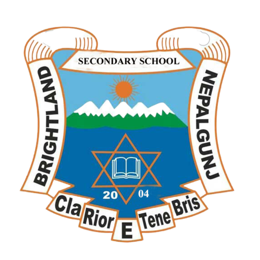

Choosing the right school for your child is one of the most important decisions a parent can make, as it directly impacts a child’s academic journey, personality development, and future success. At Brightland School, we are dedicated to providing high-quality education that nurtures not only academic excellence but also confidence, creativity, and strong moral values. We believe that every child is unique, and our goal is to create a supportive and inspiring environment where students can discover their potential and grow into capable individuals ready to face the challenges of the modern world.
Choosing the right school for your child is one of the most important decisions parents make, as it directly influences a child’s academic growth, personality, and future opportunities. At Brightland School, we understand the importance of this decision and aim to provide an environment where students can thrive academically and personally. One of the first factors parents should consider is the school’s academic approach and curriculum. A good school should offer a balanced education that focuses not only on textbooks but also on practical learning and skill development. At Brightland School, we combine traditional education with modern teaching methods to ensure effective learning.
Empowering students with expert guidance for academic success. Your trusted partner in achieving educational goals
Made with by semester tech All Rights Reserved